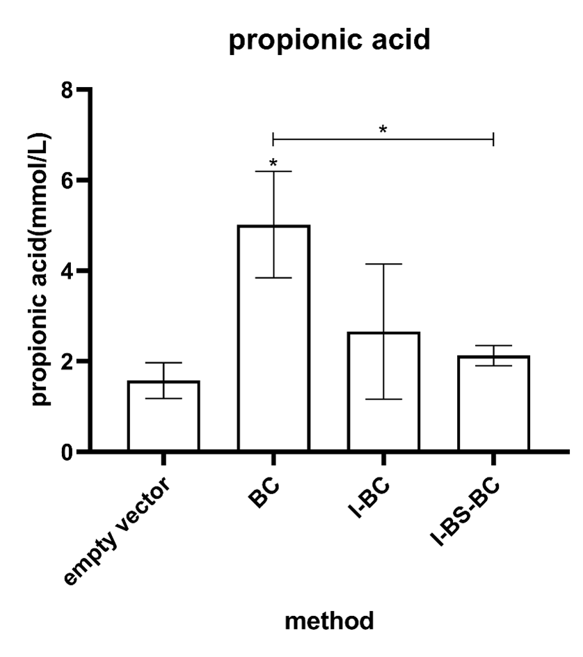

Functional validation and model establishment of oleic acid promoter
We characterized the expression of the oleic acid promoter by placing the mRFP fluorescent protein under
the control of the FadR promoter. The engineered bacteria transformed with oleic acid promoter gene were
cultured under two environmental conditions, aerobic and anaerobic, respectively, and under two media
conditions with or without oleic acid. The results showed that the oleic acid inducer was effectively
triggered to produce a fluorescent signal after induction with oleic acid. In addition, the oleic acid
promoter performed better under anaerobic conditions, indicating that the oleic acid promoter is well
adapted to the intestinal anaerobic environment (Figure 1).
Figure 1 Expression of the oleic acid inducer
(a) Expression of the oleic acid inducer in the presence or absence of oleic acid induction
under aerobic conditions
(b) Expression of the oleic acid inducer in the presence or absence of oleic acid induction in
the absence of oxygen
In addition, we built models to predict the number of operators matching the induction thresholds of
different oleic acid concentrations (Figure 2) (due to the difficulty of gene fragment
integration, we will not be able to complete the synthesis of oleic acid promoters with different
operator numbers before October, so we cannot conduct wet experiments for realistic verification). By
adjusting the number of operators, We can effectively activate gene expression by controlling the
concentration of oleic acid, which is perfectly consistent with the process of high-oil diet mentioned
in our daily life. When the concentration of oleic acid in the diet reaches the defined limit of
high-oil diet, the oleic acid promoter is switched on. When the concentration of oleic acid in the diet
is below this limit, the whole system is silenced without affecting the absorption of proper nutrients
during the normal diet. Moreover, due to the specific constitution of different people, the concept of
high-fat diet is not fixed, and we can also adjust the number of operators to perfectly match this
dynamic situation.
Figure 2. The oleic acid induction threshold can be altered by
varying the number and position of FadO operators
Screening of engineered bacteria with the best effect
In order to obtain the optimal combination of genotypes for cholesterol degradation, the IsmA, BSH and
BCoAT genes were arranged and combined to obtain the following six genotypes: IsmA, BSH, BCoAT,
isma-bsh, ISma-Bcoat, ISma-Bsh-Bcoat. Its ability to down-regulate cholesterol content was tested by
different methods.
The cholesterol-lowering effect of IsmA gene was characterized by measuring the cholesterol content of
the medium by OPA method after the strain containing IsmA gene was cultured in basal cholesterol medium
for 48 hours. The results are shown in Figure 3. The efficiency of cholesterol degradation was up to
30%.
Figure 3. Rates of cholesterol degradation exhibited by
strains carrying the IsmA gene
In addition, for the BSH gene, we evaluated the effect of different gene combinations on bile saline
hydrolysis. In this process, all the combinations of effect genes showed good bile saline hydrolysis
effect, and obvious precipitation rings appeared around the filter paper on the medium (Figure
4). In the dynamic observation of the whole process of precipitation ring formation, we found
that the activity performance of the BSH gene was generally better under hypoxic conditions than under
aerobic conditions, and in the triplet strain (IsmA-BCoAT-BSH), the activity performance of BSH was
higher than that of the BSH monogenic strain (Figure 4).
Figure 4. Results of qualitative detection of bile saline
hydrolase
In the detection process of the above two rounds of experiments, the recombined genes showed different
expression advantages compared with their own genes. Therefore, we continued to detect the expression of
SCFA module for BCoAT gene. In the evaluation of SCFA production, we detected three indicators:
butyrate, acetate, and propionic acid.
In the butyrate assay, all effector gene combinations showed butyric acid production (Figure 5).
However, in the statistical analysis, only the butyric acid production of the BCoAT single gene showed
significant difference compared with the control group, and also showed significant difference compared
with other combinations of effector genes (Figure 5).
Figure 5. Butyric acid production measured after 24h of incubation of the strain carrying the BCoAT gene grown in MRS medium
In acetic acid assays, the BCoAT single gene showed acetic acid production, but it was not statistically significant (Figure 6)." However, other functional gene combinations showed little ability to produce acetic acid (Figure 6). In the functional genome comparison, the BCoAT gene was significantly different from the triplet (IsmA-BSH-BCoAT) gene in acetate production capacity (Figure 6). This part shows the outstanding acetic acid production ability of the BCoAT single gene, but it is not completely convincing.
Figure 6. Acetic acid production measured after 24h of incubation of the strain carrying the BCoAT gene grown in MRS medium
In the detection of propionic acid, the BCoAT gene showed good propionic acid production characteristics with statistical significance compared with the control group, and in the comparison between effector genomes, it showed significant difference with the triplet (IsmA-BSH-BCoAT). "Other effector gene composition types, however, do not reflect this propionic acidogenic property (Figure 7).

Figure 6. Propionic acid production measured after 24h of incubation of the strain carrying the BCoAT gene grown in MRS medium
In summary, it seems that in the targeted evolution of cholesterol down-regulation, different genotypes still show differences and complexity in their ability to regulate cholesterol levels. Although the combination of the three genes in tandem gave strong performance in the direct cholesterol degradation by IsmA and the down-regulation of cholesterol by bile-salt hydrolases secreted by the BSH genes, this does not mean that they can perform equally well in the regulation through short-chain fatty acids (SFAs). The optimal evolutionary pathway still needs to be evaluated and determined, and perhaps a more precise answer can be obtained in subsequent in vivo experiments.